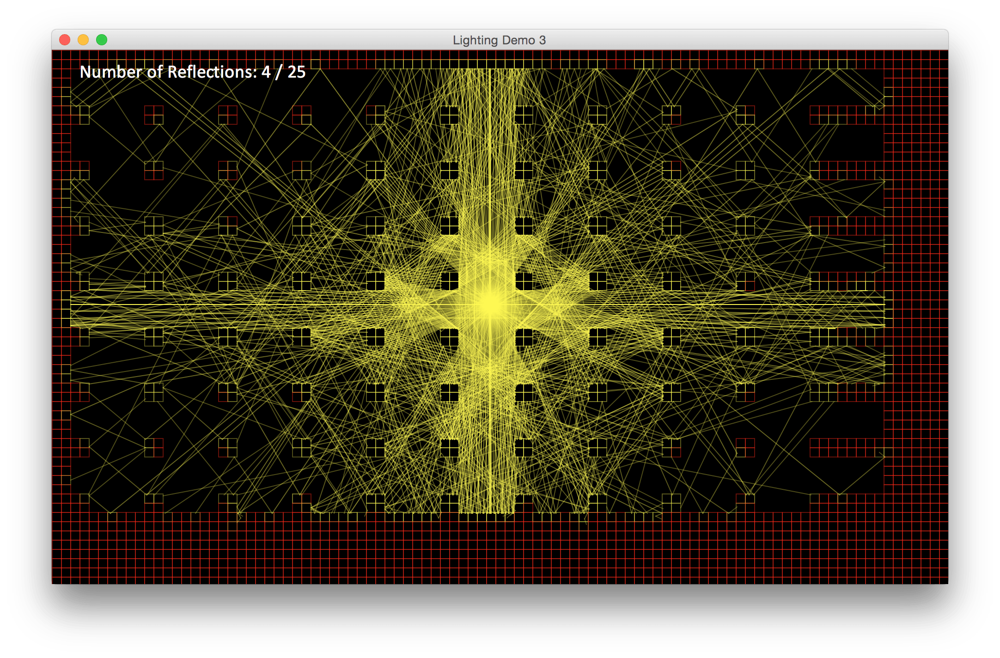
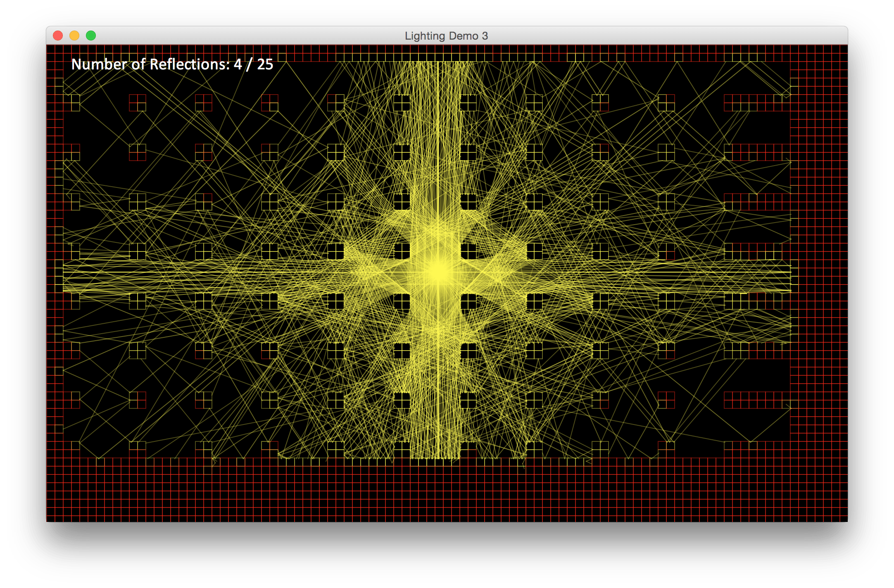

victor javid dadfar
currently... watching: parks and recreation listening to: pirates of the carribean soundtrack, ariana grande playing: kingdom hearts, just dance reading: r/funny, stackoverflow waiting for: episode vii
background
I am an avid programmer, and enjoy spending my time working on personal and group projects. I have extensive experience with leadership and management positions, and I am an active member of my community, dedicating hundreds of hours of service to various organizations. My technological skills are versatile - I work in a multitude of languages including Python, Java, C, HTML/JavaScript, and use a variety of software from Matlab to Xcode.
past
education Morris Hills High School volunteering Saint Clare's hospital (1200 hours), junior auxiliary (president/founder) extracurriculars programming club (president/founder), academic decathlon (captain), alto saxophone, and others sports fencing (epee) honors societies social studies (president), math, science, national, french internships QuarkNet summer intern (Rutgers)
present
education Johns Hopkins University, bachelor's in biomedical engineering and computer science volunteering bootup baltimore extracurriculars hackerlab (president/founder), iranian culture society, association for computing machinery, biomedical engineering society research barcode scanner (java), endoscope 3D reconstruction system internships handwriting tablet app (iOS, andriod) design teams contraceptive implant training tool (center for bioengineering innovation and design), toco transducer (engineering world Health)
future
to-do write more programs, graduate college, regularly update this site
projects
fluid simulation - java
executable jar
 jometry wars (geometry wars) - java
executable jar
jometry wars (geometry wars) - java
executable jar

 ray casting - java
executable jars

ray casting - java
executable jars

 ray tracing - java
ray tracing - java

 projection matricies - java
executable jar
projection matricies - java
executable jar

 minecraft - C
minecraft - C
 and more...
and more...
original games
disco rave - java
executable jar
jometry wars (geometry wars) - java
executable jar
a void - javascript
online game
outrace - javascript
online game